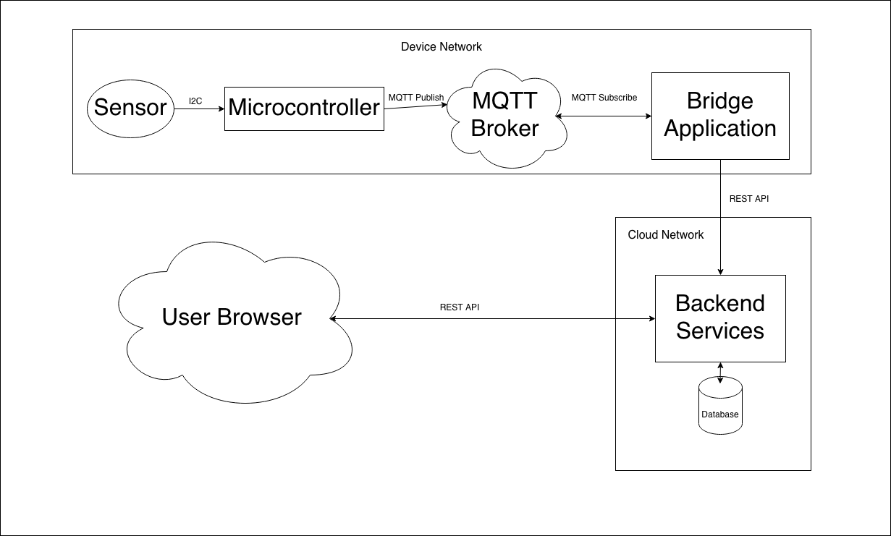

This project is actually solving a very practical problem for me. I have a pretty bad dust allergy, so living in a space filled with dust and other particles can seriously affect many aspects of my life. I also have seasonal allergies, so at certain times of year, it can be really tough to tell if my reactions are coming from dust or pollen.
Enter the sensor! I want to build a device that can clear up this confusion and help me decide what to do. I found an air quality sensor on Adafruit, and set off to design the system.
As of writing, my air quality sensor has yet to arrive. So, I've been building the data pipeline that goes with the sensor; this is how I'll actually access readings from the sensor. Because I don't know the particulars of the sensor yet, I kept the design pretty general, and put together a basic proof of concept. This general design will also come in handy later, in case I want to more, different kinds of sensors to the system.
The microcontroller in this diagram is an ESP32C6, chosen for its networking capabilities, and because I have one lying around. For the PoC, I just wrote some C++ code generating random numbers to test the data pipeline with. In the final product, the ESP will raed the sensor data through I2C and send that along instead.
The microcontroller pushes its data to an MQTT broker (mosquitto running on my laptop). This broker is subscribed to by a bridge application I wrote in Python. The bridge packages the raw data nicely, and sends it off to the backend services.
The backend services are written in Node.js. They expose a REST API for the bridge to send readings to, and then store them in a database. From here, a web-based frontend calls the services to display current values.
With this done, my next targets for this project are to keep developing the frontend, and, once the sensor arrives, to actually try it out with real data. I also have some ideas to use AI to try and help interpret the raw data and provide actual actionable feedback. It would be cool if the system could tell when air recirculation was needed, and then notify the user that it might be a good idea to open a window.